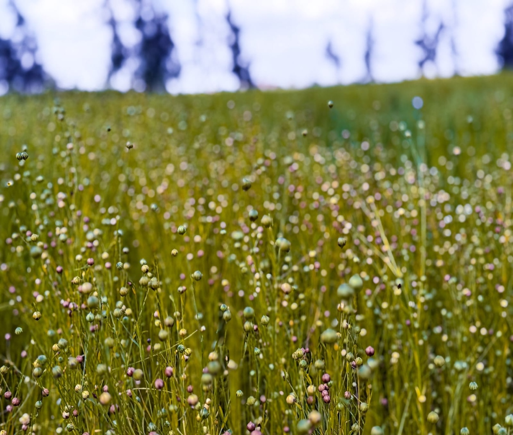
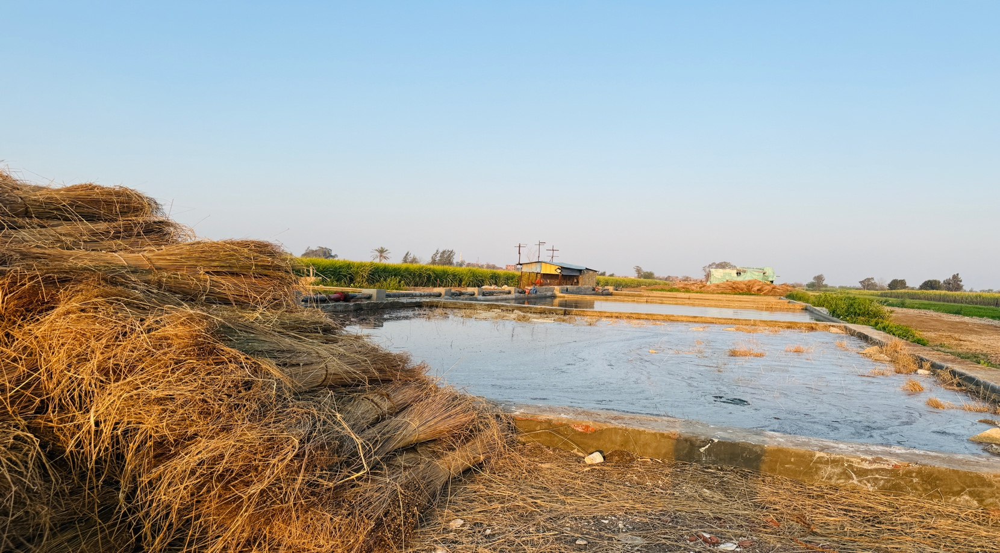

في قرية شبراملس بمحافظة الغربية، يظل الكتان أحد أهم المحاصيل الزراعية التي يعتمد عليها الأهالي، ممتدة عبر الأجيال، ومصدر رزق يعتمد عليه مئات الأسر. لكنه في الوقت نفسه يعكس واقعًا مليئًا بالتحديات التي تمتد من الزراعة وحتى النقل والتصنيع والتسويق. وبين جهد المزارعين ومشكلات البيئة المحيطة، تتكشف صورة معقدة لمحصول يحمل تاريخًا طويلًا، ولكنه يواجه صعوبات متزايدة.
يبدأ موسم زراعة الكتان من منتصف أكتوبر حتى منتصف نوفمبر، حيث ينشغل المزارعون بحرث الأرض وبذر التقاوي التي غالباً ما يتم استيرادها من فرنسا أو بلجيكا لضمان جودة الألياف، ويتم استخدام حوالي 50 إلى 60 كيلوجراماً من التقاوي للفدان الواحد، مع المتابعة الدقيقة لعمليات الري والتسميد بانتظام. ورغم أن العملية تبدو تقليدية، إلا أنها تتطلب دقة وخبرة متراكمة، لأن أي خلل بسيط قد يؤدي إلى خسارة المحصول بالكامل.
“الكتان محتاج رعاية مستمرة ويقظة تامة، وأي خطأ في الري أو التسميد ممكن يضيع تعب المحصول كله في لحظة.”
ومع التغيرات المناخية الملحوظة، تزايدت هجمات الأمراض الفطرية وعلى رأسها مرض البياض الدقيقي، ما يضطر المزارعين إلى رش المبيدات الفطرية والوقائية بشكل متكرر كل 15 يوماً، وهو ما يرفع تكاليف الإنتاج بشكل باهظ ويزيد من الأعباء والضغوط المالية على كاهل الفلاحين.
معاناة يديرها الجهد البدني:
“الشغل كله بأيدينا.. معاناة في مراحل التصنيع”
يقول أحمد جمال، أحد العمال الشباب بالقرية: “من أول فصل البذور وتذرية الكتان لحد مرحلة التعطين في الأحواض والتجفيف تحت أشعة الشمس، كل خطوة وكل تفصيلة بتتعمل بإيدينا وبمجهودنا البدني الصرف.. وده بياخد وقت طويل جداً ومجهود جبار بيهد الحيل.”

النقل ومشكلات الطريق:
لا تنتهي معاناة الكتان ومشقاته عند حدود الحقول الخضراء، بل تمتد لتشمل مرحلة النقل الحيوية؛ حيث يعتمد الأهالي والعمال على المقطورات والجرارات لنقل المحصول الضخم من الأراضي الزراعية إلى "الجرن" ومناطق التجفيف.
ويقول حمادة العويشي، وهو سائق جرار مسؤول عن نقل المحصول: “الشغل تقيل جداً والحمولة بتكون ضخمة ومرتفعة، وأي زيادة غير مدروسة في الحمولة ممكن تعمل كوارث وحوادث على الطرق الضيقة، أو تسبب أعطال مفاجئة في مقطورات الجرار.”
ويشير أهالي القرية إلى أن نقل الكتان يتسبب في كثير من الأحيان في ازدحام مروري خانق وشلل في الطرق الداخلية وشوارع شبراملس، خاصة مع الاعتماد على جرارات قديمة ومتهالكة ومحملة بأكثر من طاقتها الاستيعابية، ما يرفع من معدلات خطر الحوادث اليومية.
الجرن ومشكلات الجوار السكني:
وفي محيط “الجرن” - وهو الفراغ المخصص لتجفيف وفرز الكتان - تطفو على السطح مشكلات وتوترات بيئية واجتماعية ترتبط بالحياة اليومية للسكان المجاورين؛ حيث يشتكي أصحاب المنازل القريبة، مثل بيت “الحاج محمد سلام”، من الروائح النفاذة والكريهة الناتجة عن عمليات التعطين وتخمير النبات في أحواض المياه، والتي تتسرب بقوة إلى داخل غرف المنازل.
كما يعبر الكثير من أهالي شبراملس عن مخاوفهم البالغة من تراكم وتكدس أكوام الكتان الجاف بكميات هائلة بالقرب من الكتلة السكنية، خاصة مع تكرار حوادث الحرائق الضخمة في مواسم سابقة والتخوف من امتدادها للبيوت، ما يجعل موسم الكتان مصدراً دائماً للقلق والتوتر بجانب كونه باباً للرزق.
مراحل التصنيع اليدوي المستمر:
بعد انتهاء الحصاد وتقليع المحصول، تبدأ سلسلة طويلة من مراحل التصنيع التقليدية التي ترتكز بالكامل على العمل اليدوي، وتشمل عملية فصل البذور (التذرية)، ثم وضع الكتان في أحواض التعطين المائية لعدة أيام لتسهيل فصل الألياف عن الساق الخشبية، تليها عملية التجفيف الطويلة تحت الشمس، ثم استخراج وتصفية الألياف الذهبية الطويلة وتعبئتها.
أسئلة شائعة حول موسم الكتان بشبراملس:
هل يوفر موسم الكتان فرص عمل كافية؟
بالتأكيد، يعتبر موسم الكتان شريان الحياة الاقتصادي للقرية والقرى المجاورة؛ حيث يستوعب آلاف الأيدي العاملة والعمالة الموسمية الوافدة من مختلف المحافظات. ويمكن لأي شاب من سن 15 عاماً فما فوق العمل بالموسم، نظراً لأن أغلب المهام تعتمد بشكل أساسي على القوة والمجهود البدني والتحمل.
كيف يتم تسويق وتصدير المحصول؟
حتى الآن، لا توجد جهة رسمية أو حكومية محددة تتسلم المحصول بأسعار ثابتة، وكل مزارع يضطر لبيع إنتاجه بأسعار متقلبة للتجار حسب العرض والطلب. وللأسف، يتم تصدير جزء كبير جداً من الكتان كمادة خام رخيصة لأسواق خارجية مثل الصين، نظراً لغياب المصانع المحلية المؤهلة للتصنيع النهائي والاستفادة من القيمة المضافة العالية للمحصول.
هل تتوفر إمكانيات لتصنيع الكتان محلياً؟
الجميع هنا في شبراملس يتطلع ويحلم بتحقيق ذلك؛ لأن التصنيع المحلي المتكامل سيضاعف أرباح المزارعين والتاجر ويوفر آلاف فرص العمل الدائمة لأبناء المحافظة. وقد تردد مؤخراً كلام حول مشروعات تنموية جديدة لإنشاء مصانع غزل متطورة، ويتمنى الأهالي والشباب رؤيتها تتحقق على أرض الواقع قريباً.
“زراعة وتصنيع الكتان بالنسبة لنا مش مجرد لقمة عيش أو شغلانة عادية، دي حياتنا وهويتنا ودمائنا اللي ورثناها عن أهالينا وجدودنا، وبنشتغل فيها من صغرنا، ومهما واجهنا من مشقة وتعب مستحيل نستغنى عنها.”
ويضيف الحاج سامي بحسرة: “تقريباً كل مراحل الإنتاج والتصنيع بتتم باليد وعبر المجهود الشاق، وفي غياب كامل للماكينات والآلات الحديثة اللي ممكن تريحنا وتنقذ الحرفة.”
غياب التنظيم والدعم الحكومي:
ومن داخل الجمعية الزراعية بشبراملس، يوضح الأستاذ عبد الله المداح أن زراعة الكتان بالقرية لا تزال تدار عبر جهود فردية ومبادرات شخصية للمزارعين والتجار، في ظل غياب منظومة تسويقية وإرشادية متكاملة تدعم الفلاح أو تحميه من تقلبات الأسعار الجائرة في الأسواق الحرة. كما يؤكد بشدة أن ضعف البنية التحتية للمبلات وغياب الميكنة وخطوط الإنتاج الحديثة يمثلان أكبر وأخطر العقبات التي تهدد بقاء هذا المحصول الاستراتيجي.
“نتمنى دعماً حقيقياً وملموساً من الدولة، سواء عبر توفير الآلات والمعدات الحديثة للمزارعين أو تقديم قروض وتسهيلات لإنشاء مصانع غزل ونسيج متطورة. نريد الحفاظ على حرفتنا التاريخية وتطويرها بدلاً من تصدير ذهبنا الأصفر كخام رخيص وضياع قيمته المضافة.”
بين الإرث القديم والمستقبل المجهول:
ورغم كل الصعوبات والهموم اليومية، يتمسك أهالي شبراملس وعائلاتها بزراعة وصناعة الكتان باعتبارها إرثاً تاريخياً مقدساً وهوية ريفية أصيلة تضرب بجذورها في أعماق تاريخ القرية. غير أن هذا التمسك الحار يرافقه قلق وتوجس دائم من المستقبل الغامض في ظل الارتفاع المستمر لأسعار التقاوي والمستلزمات، وصعوبة العمل اليدوي المرهق، وغياب التطوير الفعلي.
ويبقى الكتان في قرية شبراملس شاهداً حياً على حرفة عريقة تقاوم تقلبات الزمن وتتمسك بالحياة، غير أن استمرارها الآمن والمنتج للبلاد يظل معلقاً بوجود دعم رسمي وتنموي حقيقي يرتقي بها نحو التصنيع الكامل والتحديث الشامل.



أترك تعليقاً...